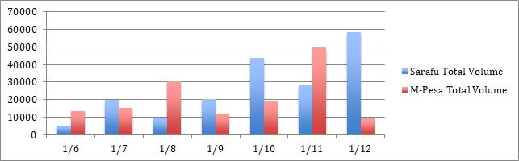

Comparative Analysis of eMoney and Community Currency
Introduction
Sarafu is a network of interoperable community currencies implemented by Grassroots Economics, aimed at eradicating poverty through the creation of endogenous credit in the marginalized communities (Ruddick et al., 2018). In Kenya the Sarafu network has been implemented in communities living below the poverty threshold in both rural areas and urban slums. One of the most successful cases of such implementation is that of Miyani, part of the Kasameni sub-location, where the community currency spread to more than 4800 users at the time of this study. Sarafu is, however, only the most recent step on the path of financial innovation for the inclusion of marginalized communities in Kenya. As Edwards (Edwards, 2016 p.2016) shows, for instance, mentioning the case of M-Pesa:**
The combination of widespread cellular communication and the ability to transfer money instantly (via eMoney), securely, and inexpensively are together leading to enormous changes in the organization of economic activity, family relations, and risk management and mitigation
The achievement that the Sarafu network brings about is the chance to create and use a complementary currency, helping the communities to overcome the scarcity of national currency, which is accepted 1:1 with the national currency by the local businesses. It has been shown to provide a liquid means of exchange to the members of the communities that effectively incentivizes local production through its circulation, and to have helped the users to increase their savings in Kenya Shillings, as Marion Cauvet has shown (Cauvet, 2018).
In order to provide further evidence for the impact of Sarafu, its circulation will be analysed and compared to that of other eMoney services in Kenya used by the sample group.
This comparison is also important, because eMoney is one of the few alternative means of exchange to cash in areas such as Miyani, since very few of its inhabitants have a bank account, and, therefore, it is difficult to find reliable data relative to the circulation of national currency.
Analysis of the Transactions
The sample consists of 6 individuals living in the Miyani area (4 men and 2 women), who voluntarily disclosed their eMoney transactions, which have been compared to the transaction dataset stored on the Sarafu open source blockchain-based database. The period considered is the Semester between June and December 2019. However small, the sample is considered to be representative of the population of Miyani.**
All the individuals considered used both traditional e-money and Sarafu. The data show that the 6 users analysed, conducted 578 transactions through Sarafu worth a total volume of 185,666 and 685 through E-money worth 148,757 Kenya Shillings.
Over the whole time period transactions in Sarafu produced a volume roughly 24,8% higher than those in Kenya Shillings via eMoney.
Moreover, it can be observed that, during June, August and November more Kenya Shillings were exchanged through E-money than Sarafu, whereas in July, September, October and December it was the opposite showing a counter cyclical effect likely related to crop yields. The maximum volume exchanged in one month through Sarafu was 58,554 (December), whereas the maximum amount exchanged via E-money in the period observed was 49457 (November). The standard deviation of the monthly volume exchanged in Sarafu is 9553,958855 Sarafu, whereas that of the volume of Kenya Shillings transactions is 14,214,05, whereas the total standard deviation of exchanges both in Sarafu and Kenya Shillings, amounts to 21600,17471, which is lower than the sum of the other two (amounting to 23768,01553). This shows us that the presence of Sarafu stabilizes the economic system, working as a buffer in the months when the national currency is scarce. It is moreover worth to notice that both the volume of the transactions in Kenya Shillings and Sarafu grew over the period. This is evident if it is taken into account that the sum of volumes in June, July, August and September , amounting to 71043 for eMoney and , is inferior to the that in the last 3 months, worth 77680. The same can be said for the volume exchanged in Sarafu, amounting to 55433 and 130143 respectively.
By analysing more in detail the eMoney transactions, however, it can be noticed that the overall outflow consists of: 26744 Ksh transferred to other accounts, 33823 Ksh withdrawals and 12456 Ksh used to pay bills. Conversely, in the same time period, Sarafu were mainly spent among local businesses for buying farm produce(42221), fish(36626), vegetables (30295), water (27321), to save or to take loans from the chama, that is a savings and loans association (26600).
Preliminary Results The volume of the exchanges, differed significantly, showing that Sarafu circulated faster than the emoney in the period considered. Moreover, it is evident that the majority of Sarafu were spent among local businesses, whereas a larger portion of the Kenya Shillings circulating were withdrawn. Furthermore Sarafu, even though it was implemented only in 2017 in the Miyani area (Cauvet, 2018), plays a fundamental role in the life of these inhabitants of Miyani, who benefit from the interaction between the national currency and the alternative currency to meet their everyday needs. More specifically, evidence shows that Sarafu worked as a counter-cyclical buffer, bringing stability to the local economic system, and fostered circulation of goods and services also through traditional e-money, as it can be noticed from the fact that the overall volume exchanged not only in Sarafu, but also that in Kenya Shillings increased over the time period. Due to the scarcity of data, however, the conclusions achieved are only partial, and, therefore, further research should confirm the findings.**
https://github.com/GrassrootsEconomics/TransactionDatasets
The transaction data relative to the traditional forms of E-money were collected by Sowelu Avanzo, a student of the University of Torino, while he was conducting the fieldwork for his research on the Sarafu network in Miyani from October to December 2019. For more information on this ongoing research contact sowelu94@gmail.com.